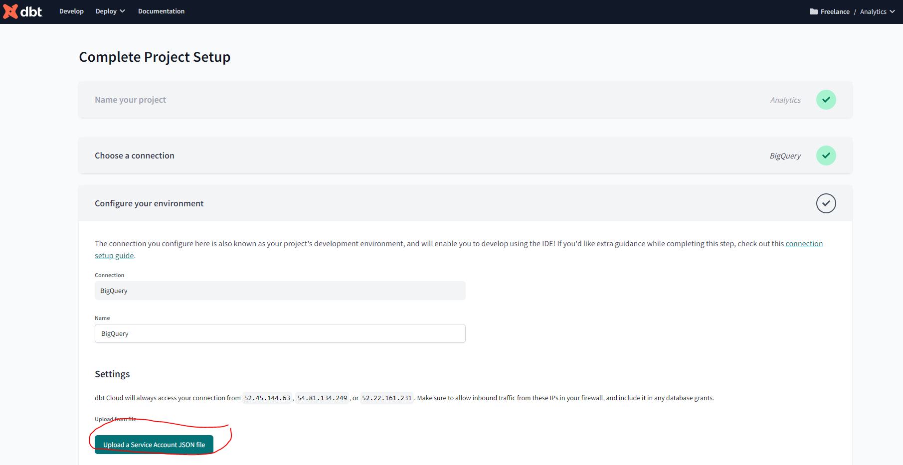

Week 4 - Analytics Engineering
Goal: Transforming the data previously loaded in to our data warehouse (in my case BigQuery) to Analytical Views developing a dbt project.
To recap I already have the following prequisite datasets in a Google Cloud Storage data lake and have created external tables:
Yellow trip data (109,047,518 rows)
fhv trip data (43,244,696)
Green trip data (7,778,101 rows)
How to set up dbt for using BigQuery
Create a BigQuery service account
In order to connect we need the service account JSON file generated from bigquery:
- Open the BigQuery credential wizard to create a service account in your taxi project
- You can either grant the specific roles the account will need or simply use bq admin, as you’ll be the sole user of both accounts and data.
Note: if you decide to use specific roles instead of BQ Admin, some users reported that they needed to add also viewer role to avoid encountering denied access errors
- Now that the service account has been created we need to add and download a JSON key, go to the keys section, navigate to
ADD KEYthen selectCreate new keyfrom the dropdown. Select key type JSON and once you click on create it will get inmediately downloaded for you to use.
Create a dbt cloud project
- Create a dbt cloud account from their website (free for solo developers)
- Once you have logged in into dbt cloud you will be prompt to create a new project
You are going to need:
- access to your data warehouse (bigquery - set up in weeks 2 and 3)
- admin access to your repo, where you will have the dbt project.
Note: For the sake of showing the creation of a project from scratch I’ve created a new empty repository just for this week project.

Name your project
Choose Bigquery as your data warehouse:

- Upload the key you downloaded from BQ on the create from file option. This will fill out most fields related to the production credentials. Scroll down to the end of the page and set up your development credentials.


Add GitHub repository
Note: This step could be skipped by using a managed repository if you don’t have your own GitHub repo for the course.
- Select git clone and paste the SSH key from your repo.

- You will get a deploy key, head to your GH repo and go to the settings tab. Under security you’ll find the menu deploy keys. Click on
Add deploy keyand paste the deploy key provided by dbt cloud. Make sure to tick on “write access”.
Review your project settings
At the end, if you go to your projects it should look some like this: